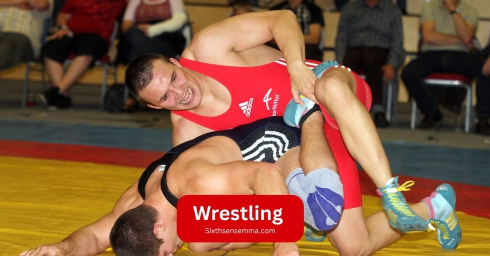
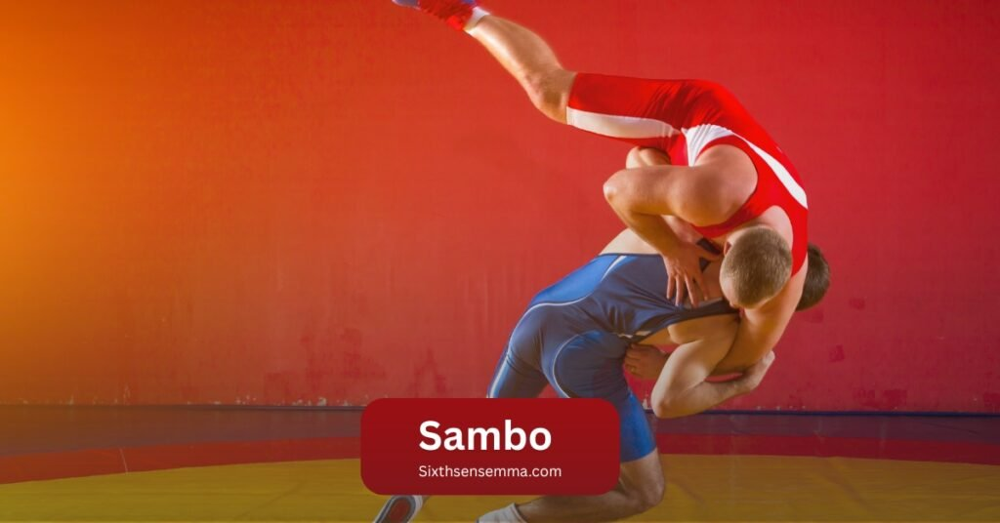

Best 11 MMA Fighting Styles for Self Defense
MMA fighting styles began not just as a sport, but as a search for practical, real world self defense. What emerged was a dynamic blend of martial arts styles unified under one competitive system.
MMA allows training across a wide range of disciplines from ground-based grappling to stand-up striking and each technique offers real-world application. By combining methods from different systems, fighters are able to respond effectively in competition or self-defense situations.
Whether inside the Octagon or in everyday scenarios, MMA builds versatile skills for both close-contact grappling and long-range striking. This blog explores the 11 most effective and widely used fighting styles that shape modern MMA, each offering practical value for real-life defense and competition.
These martial arts are more than just techniques for fans or fighters they are tools for building real confidence, physical readiness, and self reliance.
| Rank | Fighting Style | Best For |
|---|---|---|
| 1 | Boxing | Quick punches, close-range striking |
| 2 | Muay Thai (Thai Boxing) | Elbows, knees, clinch control |
| 3 | Brazilian Jiu Jitsu (BJJ) | Ground defense, chokes, submissions |
| 4 | Kickboxing | Balanced kicks and punches |
| 5 | Wrestling | Takedowns, control on the ground |
| 6 | Taekwondo | Fast kicks, keeping distance |
| 7 | Karate | Quick strikes, timing, discipline |
| 8 | Judo | Throws, joint locks, grappling |
| 9 | Kung Fu | Reflexes, flowing movements |
| 10 | Capoeira | Evasive defense, unpredictable motion |
| 11 | Sambo | Grappling, leg locks, practical self defense |
1-Boxing
Boxing stands as one of the most effective and widely used fighting styles in MMA for real world self defense. It’s not just about throwing punches it’s a mixture of footwork, head movement, timing, and sharp reflexes.
In self defense, these skills are practical and can be applied instantly. What makes boxing powerful is its focus on striking from a standing position, giving you control during sudden encounters. Many athletes train in boxing because it teaches distance control, speed, and timing all essential in both competition and real life situations.
Boxing has influenced modern MMA deeply and is integrated into almost every fighter’s primary training plan. It allows fighters to respond effectively to pressure with fast counters and defensive movement. While it may not include grappling or ground work, when merged with other martial arts, boxing becomes a key part of a full contact system.
Inside the Octagon, boxers often dominate the action, showing how this dynamic, exciting style continues to shine. We’ll examine how boxing, among the top 10 styles, gives you a sharp edge in both sport and self-defense by sharpening your techniques, helping you compete, and preparing you for a variety of combat situations.
2-Muay Thai (Thai Boxing)
What’s truly admirable about Muay Thai is how fighters like Valentina Shevchenko and Joanna have used it to dominate with precise kicks, brutal knees, and well-timed elbows. Known as the art of eight limbs, Muay Thai trains you to use every part of your body for damage punches, jabs, kicks, and knees become natural weapons.
In MMA, it’s one of the most effective tools, especially in close-range encounters near the cage. It teaches balance through a strong stance, sharp footwork, and explosive combinations that can be fight ending when timed right.
One of the most important aspects of Muay Thai is clinch work. Using underhooks, overhooks, and smart posture, fighters can control opponents, deliver powerful knee attacks, and maintain dominant positions.
The throws, sweeps, and subtle tweaks used to maintain balance help build a complete base for striking and takedown defense. Legends like Jose Aldo have adapted Muay Thai’s traditional techniques into modern sparring, mixing them with BJJ and wrestling. In real situations or inside the cage, this style’s mobility, distance control, and raw power make fighters smarter, more dangerous, and effective — both mentally and physically.
3-Brazilian Jiu Jitsu (BJJ)
In MMA, Brazilian Jiu Jitsu is unique due to its positional, calm, and strategic style.Fighters like Charles Oliveira and Demian Maia have showcased its effectiveness in the UFC through flawless transitions, chokes, and armbars.
What makes BJJ so powerful is its reliance on control, leverage, and technique rather than brute strength. It focuses on smart body mechanics to outmaneuver opponents, secure dominant positions, and apply submission pressure that ends fights efficiently.
BJJ training emphasizes survival in difficult positions whether pinned against the cage or trapped in mount through techniques like escapes, sweeps, and guard defense. This system, originally influenced by traditional Japanese Jiu Jitsu and later redefined by the Gracie family, transformed ground fighting in MMA.
It turns panic into opportunity, allowing fighters to control the pace, score points, and execute submissions with precision. In modern MMA, BJJ isn’t just an advantage it’s a fundamental requirement.
4-Kickboxing
The amazing kicks and furious punches that Mirko Cro Cop and Mark Hunt exchange inside the cage serve as a perfect example of what kickboxing offers MMA. What sets kickboxing apart is its blending of karate, Dutch style, and modern striking techniques, forming a high-paced art that rewards balance, timing, and tactical aggression.
It begins with basic jab-crosses and evolves into cleaner combinations, sharper footwork, and better angles to control pace and maintain distance. Applying pressure without going overboard requires the use of techniques like the roundhouse kick and low leg kicks.
Fighters like Israel Adesanya, Alistair Overeem, and Mark Hunt have demonstrated how a kickboxing foundation can dominate stand-up exchanges through precise attacks, fluid adjustments, and powerful strike selection. Training in kickboxing demands constant movement, strong defense, and a solid stance under pressure.
It’s not just about being fast it’s about combining styles, following smart rule sets, and using the right techniques to rule the fight. Whether under Asian or Dutch rules, range control, punch speed, and kick placement come together in a striking base built to dominate in MMA and beyond.
5-Wrestling

If there’s one style that teaches you how to dictate the pace, shut down threats, and build pure dominance, it’s wrestling. Wrestling delivers a real taste of pressure through live drills, scrambles, takedowns, and positional control that define every exchange.
It stands out in MMA thanks to athletes like Khabib Nurmagomedov, Daniel Cormier, and Georges St-Pierre, who dominated the UFC with their wrestling backgrounds. Their ability to neutralize opponents, manage pressure, and switch direction mid-clinch reflects strategic warfare. Wrestling builds endurance, sharpens mental toughness, and provides the kind of control that wins points or even finishes fights.
Whether it’s Greco-Roman or Olympic freestyle, wrestling blends seamlessly with jiu-jitsu and striking, especially in mixed martial arts. It teaches how to read movement, throw opponents, and use feints to set up clean takedowns. Training focuses heavily on prevention, defense, takedown setups, and repetition.
These skills aren’t just about getting an opponent down they’re about staying on top, controlling the standing game, and having the foundation to compete at the highest level. Wrestlers like Jon Jones and GSP used this base to stay elite, adapt to all styles, and become true champions inside the cage.
6-Taekwondo
Taekwondo gave me a unique edge in MMA, not just because of its speed or flashy kicks, but for its ability to adapt in close range and open distance scenarios. Watching fighters like Anthony Pettis, Yair Rodriguez, and Valentina Shevchenko turn flash into function inspired me to fine tune my timing, balance, and kick placement.
Unlike other disciplines, Taekwondo’s dynamic movement, footwork, and spinning techniques make it incredibly unpredictable inside the cage. That moment of surprise a quick back kick or a leaping high roundhouse often creates fightending openings. I’ve used it in sparring to create space, break guards, and control the pace in ways many wrestlers or grappling based fighters never expect.
Taekwondo isn’t just about style, it produces knockouts with explosive power, especially when cross-training with BJJ or wrestling to cover ground weaknesses. I’ve seen champions like Anderson Silva, Rose Namajunas, and even the Korean Zombie blend Taekwondo with other arts, making their presence inside the Octagon nothing short of spectacular.
The art also emphasizes strong stance, hand control, and high level kicking skills that are sharpened over time, even into old age. Whether you’re a black belt or just adding flair, Taekwondo gives you tools to adapt, control the range, and keep your opponent guessing every second of the fight.
7-Karate
It wasn’t just about its traditional roots or its Okinawan history it was about the success it brought to modern MMA fighters like Lyoto Machida, Stephen “Wonderboy” Thompson, and George St Pierre. What stood out most was the speed, timing, and sharp counterstriking it taught me.
Styles like Shotokan, Goju Ryu, Shorin Ryu, and even Kenpo rely heavily on snap style kicks, smart footwork, and calculated movement to create openings. Practicing side step counters and learning to fight from a side on stance gave me the ability to manage distance, evade strikes, and land clean shots with precision.
Inside the Octagon, Karate gives you more than just flashy moves it teaches how to blend linear and circular techniques for full control. Watching Whittaker, Rashad Evans, and Tyron Woodley deal with unpredictable opponents like Wonderboy showed how Karate forces constant bouncing, angle changes, and unpredictable attacks that frustrate even elite grappling specialists.
While not as hard as Muay Thai in terms of raw power, Karate offers something more elusive: deceptive setups, slick defense, and counter opportunities that can flip a fight instantly. Whether you’re using Goju, Kyokushinkai, or fusing it with BJJ, this art thrives on blending stances and styles for a complete fighting approach.
8-Judo
Judo gave me a completely different sense of balance, momentum, and control skills that become deadly inside the cage when timed right. Watching Ronda Rousey, Karo Parisyan, and Kayla Harrison use world class throws like Seoi nage and Osoto Gari to dominate in MMA made me realize how effective Judo truly is.
Its ability to transform a firm grip or clinch into a clean takedown and then immediately threaten submission with armbars or the Kimura hold is what makes it so beautiful. With strong footwork and tactical pressure, Judo allows Judokas to control the standing fight and transition effortlessly into groundwork.
From Yoshihiro Akiyama to Khabib Nurmagomedov, even strikingsavvy fighters have benefited from this tool to finish fights once they close the distance. The influence of Jujutsu is clear in Judo’s structure thanks to Kano’s vision and throws like the Ippon or a quick trip can change the fight in seconds.
9-Kung Fu:
Kung Fu stands out for its unorthodox, dynamic, and surprisingly slick movements during combat. The art draws from multiple traditional styles such as Wing Chun, Shaolin, Praying Mantis, and Wu Shu each contributing unique techniques that go far beyond visual flair.
Fighters like Cung Le and Zabit Magomedsharipov have shown how Kung Fus roots in traditional movement can evolve into effective striking, throws, and tripping techniques within MMA. Their use of explosive kicks, quick trapping hands, and smooth angle changes creates unpredictability, especially in close-range exchanges.
Names such as Kevin Holland, Roy Nelson, and Silvana Gomez Juarez have demonstrated how blending Kung Fu with other disciplines can add versatility and surprise to a fighter’s style.
Archived fights and training clips from athletes like Barry Fu, Pat Barry, and Augusto Montaño show how unconventional moves like sweeps and historically rooted techniques (such as eye gouges, now adapted under modern rules) contribute to control and fight strategy.
Whether through Ian McCall, Kua Gung Fu, or legends like Juarez Wu, Kung Fu proves that, while not mainstream, it remains a deeply strategic art built on centuries of refined striking and throwing mechanics.
10-Capoeira:
Capoeira is unlike any other fighting art I’ve trained it’s a wild blend of movement, rhythm, and fight ready creativity rooted in Brazil’s cultural expression. When I saw Michel Pereira and Elizeu Zaleski dazzle crowds in the UFC with sudden flips, spinning kicks, and explosive strikes.
Capoeira isn’t just performance it’s a tactical system built on unpredictability, sharp angles, and sheer surprise. With agility, reflexes, and a dancer’s balance, capoeiristas use fluid footwork and twist based kicks to disorient opponents, creating unexpected opportunities to strike.
They’re designed to catch your opponent off guard, forcing them to hesitate. What makes capoeira powerful in MMA is how it blends creativity, sudden change in rhythm, and show stopping offense to flip a fight’s momentum instantly. Its roots in samba and dancing give it a rhythm based style that not only looks cool but works especially when traditional strikes become too predictable.
11-Sambo:

Sambo, an acronym for a Soviet era martial art, literally comes from the phrase meaning “self defense without weapons.” Developed for military use, Sambo quickly became a dominant training system for real combat situations.
What makes it unique is how it blends elements of wrestling, judo, and striking into a highly effective style.
In Combat Sambo, used by fighters like Fedor Emelianenko and Khabib, you add punches, kicks, knees, and elbows into the mix. That’s where it truly becomes dangerous. It’s not just about taking someone down; it’s about controlling them through pressure and efficient punching while defending against counters.
The system teaches strong defense, precise kicking, and smooth takedown setups that overwhelm opponents. Sambo may have been born in the Soviet military, but in the world of MMA, it’s proven itself time and again as a complete, fight ready toolkit.
🔥 Two Styles: Sport vs. Combat Sambo
| Style | Focus | Techniques Allowed |
|---|---|---|
| Sport Sambo | Throws & groundwork (like judo) | Throws, submissions, leg-locks; no strikes |
| Combat Sambo | Full MMA style combat | Adds strikes, headgear; bridges into MMA |
MMA Weight Classes
MMA competition is divided into divisions according to weight range.To guarantee fair matches, MMA competitors compete in weight based classes.Here’s a breakdown of the main divisions under the Unified Rules that most promotions, like the UFC, follow:
Men’s Divisions
- Flyweight (125-pound limit)
- Bantamweight (135-pound limit)
- Featherweight (145-pound limit)
- Lightweight (155-pound limit)
- Welterweight (170-pound limit)
- Middleweight (185-pound limit)
- Light Heavyweight (205-pound limit)
- Heavyweight (265-pound limit)
That makes eight official men’s divisions in UFC––minus the combined divisions shared with women (fly, bantam, featherweight)
Women’s Divisions
- Strawweight (115-pound limit)
- Flyweight (125-pound limit)
- Bantamweight (135-pound limit)
- Featherweight (145-pound limit)
That’s four women’s divisions in UFC. Unlike men, women don’t currently compete in lightweight and higher brackets
Real MMA Training in Every Style at SixthSense
If you truly want to train like a professional, SixthSense is the place where every major style from Boxing, Muay Thai, Kickboxing, Wrestling, BJJ, Judo, to Sambo comes together under one roof. As someone who’s trained personally at this gym, I can tell you the coaching is not just intense it’s structured to deliver real results.
Whether you’re a total beginner or looking to improve professionally, the coaches pay attention to every detail, helping you build your fight skills step by step. They teach solid technique, mindset, and movement in a way that feels like you’re being guided not just trained.
What I love most is how they guide you through each system including transitions between styles, helping you apply techniques under real pressure. Every training session is designed to simulate what happens in an actual MMA fight, so you’re not just learning you’re evolving.
SixthSense isn’t just for pros it’s for every fighter who wants to grow the right way, with structured, professional level coaching tailored for beginners and experienced athletes alike.
Why Choose SixthSense MMA Real Benefits We Offer
- All styles in one place – Learn from experienced coaches in boxing, grappling, and striking, all under one roof.
- Customized coaching – We adjust training based on your fitness level, goals, and background.
- Safe training environment – We focus on injury-free progress with professional guidance.
- Real fight prep – Want to compete? We prepare you mentally and physically for the cage.
- Fitness + skill building – Our training improves both your fighting technique and overall health.
- Flexible timings – Multiple class slots make it easy to train even with a busy schedule.
- Supportive community – You’re not just a client here — you’re part of the fight family.
What Our Students Say Real Reviews
“I never thought I could learn this many styles in one place. SixthSense MMA made it possible.” – Umar A.
“From day one, I felt respected and supported. The coaches push you, but in a good way.” – Hamza R.
“Training at SixthSense changed my life. My stamina, skills, and confidence all improved.” – Sana M.
“This is not a commercial gym it’s a real fight center. You actually learn how to fight here.” – Zeeshan L.
“I started as a beginner with no background. Now I feel like a real martial artist.” – Rabia F.
“Best decision I made for my son. SixthSense MMA taught him focus, discipline, and self control.” – Nadia M.
Contact Us
Want to join or learn more? Call us, visit our center, or send a quick message we’ll get back to you fast.
📧 Email: [info@sixthsensemma.com
Conclusion
A true MMA fighting style isn’t just about learning a single art it’s about how fighters integrate multiple disciplines to form a comprehensive skill set. Inside the Octagon, those who can blend striking, grappling, and tactical strategies with precision and control often rise to the top.
The key lies in understanding your strengths, building leverage, and using each martial art to create a style that feels unique, natural, and seamless under pressure. I’ve seen this transformation personally when you stop isolating techniques and start blending them, you unlock an unparalleled level of versatility.
This mastery doesn’t come overnight, but with consistent training, attention to detail, and the right environment for growth, you can showcase your skills in competition with confidence. Whether your base is grappling or striking, learning how to integrate different arts is not optionalit’s essential. MMA success is built on layers of knowledge, and the more you set yourself apart through smart adaptation and cross training, the greater your edge in any fight.
FAQ’s
While all MMA styles offer real-world benefits, Boxing, Muay Thai, and Brazilian Jiu-Jitsu (BJJ) are among the most effective for self-defense. Boxing teaches striking and footwork, Muay Thai adds clinch and elbow control, while BJJ excels in ground defense and submissions.
Yes. Modern MMA training encourages learning a blend of striking, grappling, and ground fighting techniques. At gyms like SixthSense MMA, all major styles (Boxing, BJJ, Wrestling, Kickboxing, etc.) are taught in an integrated way to build complete fighters.
Absolutely. BJJ remains a core discipline in MMA due to its strategic control, submissions, and ability to neutralize larger opponents using leverage. It’s essential for surviving and winning on the ground.
While not a primary base, Capoeira adds unpredictability, rhythm, and evasive movement that can catch opponents off guard. Fighters like Michel Pereira have shown its potential when mixed with foundational styles.
Muay Thai is known as the “Art of Eight Limbs” because it uses punches, kicks, elbows, and knees. Its clinch work and balance make it extremely effective in close-range combat and inside the cage.
Yes! Beginners are welcome at professional gyms like SixthSense MMA, where training is customized based on your skill level, fitness, and goals. You’ll learn foundational techniques across multiple styles step by step.
Train with us in Coppell
The first class is free. Shorts, a t-shirt and a water bottle. We lend the rest.
Book a free class